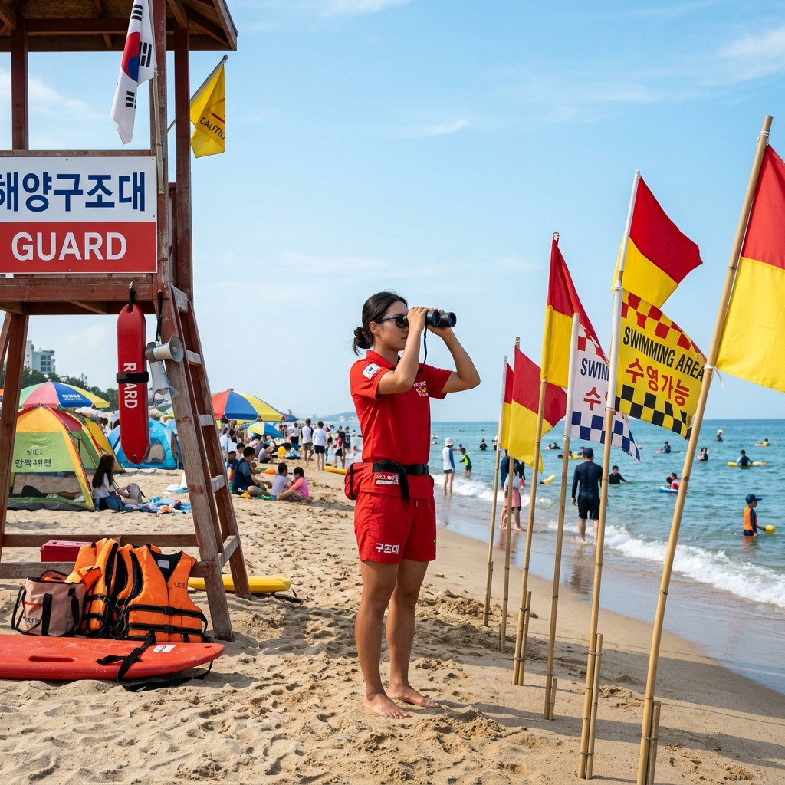
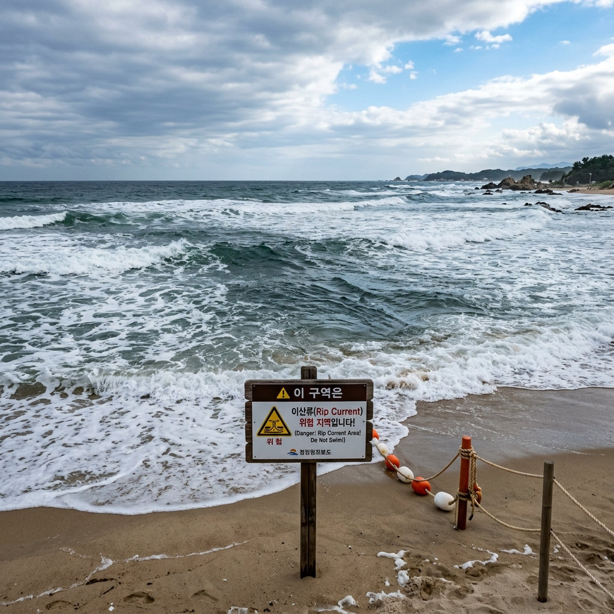
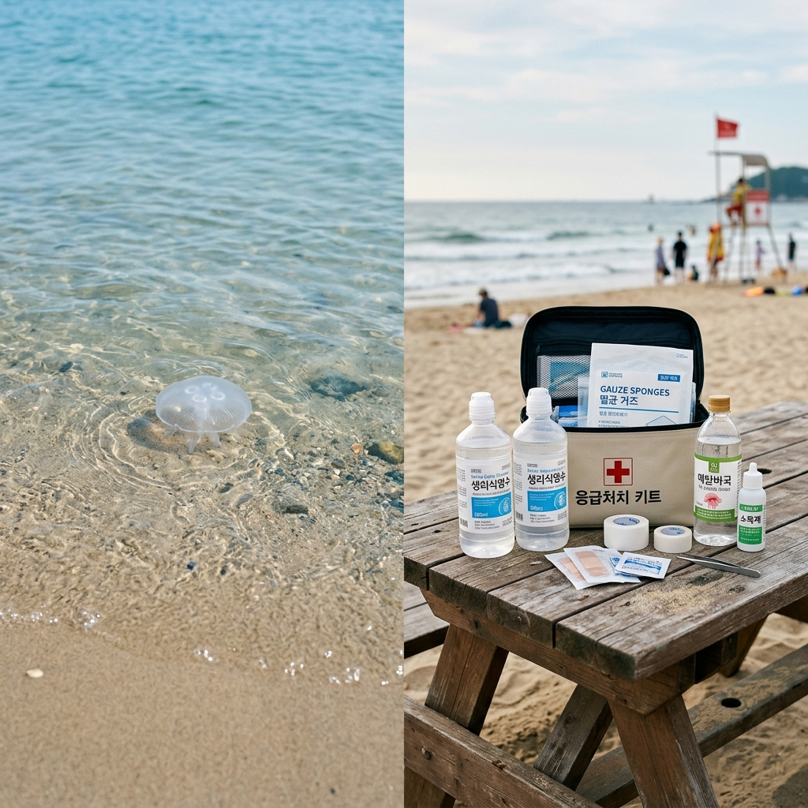

이안류(離岸流, rip current)는 해안 쪽으로 밀려오던 파도가 갑자기 먼바다 방향으로 빠르게 되돌아 나가는 좁고 강한 흐름을 말합니다. 흔히 '역파도'라고도 불리는데요, 파도가 부서지며 해변에 쌓인 물이 한곳으로 모여 바다 쪽으로 빠져나가면서 만들어진다고 알려져 있습니다.
겉으로 보기에는 그 부분만 파도가 잔잔하거나 물색이 다르게 보여서 오히려 안전해 보일 수 있다는 점이 위험 요소로 꼽힙니다. 실제로는 그 좁은 통로를 따라 물살이 빠르게 흐르기 때문에, 사람을 순식간에 먼바다 쪽으로 끌고 나갈 수 있습니다.
관련 자료들에 따르면 이안류는 폭이 비교적 좁은 대신 유속이 빠른 것이 특징이라고 합니다. 평소 수영에 자신 있던 사람도 흐름을 거슬러 헤엄치다 체력을 소진하기 쉬워, 수영 실력과 무관하게 누구에게나 위험할 수 있다는 점을 기억해 두시면 좋겠습니다.
발생 위치와 세기는 그날의 파도, 바람, 해저 지형에 따라 수시로 달라진다고 하니, "어제 안전했으니 오늘도 괜찮겠지"라는 생각은 피하시는 편이 안전합니다. 바다 상태는 같은 해수욕장이라도 시간대에 따라 크게 변할 수 있습니다.
이안류의 또 다른 특징은 한번 발생하면 같은 자리에서 일정 시간 이어지는 경우가 있다는 점입니다. 그래서 평소 사람들이 적게 모이는 한적한 구간보다, 안전요원이 권장 구간으로 표시해 둔 곳에서 물놀이하시는 편이 한층 안전합니다.
저 역시 처음에는 "수영을 좀 하니 괜찮겠지"라고 가볍게 여겼는데, 이안류는 수영 실력으로 이겨 내는 흐름이 아니라 '방향을 바꿔 빠져나오는' 흐름이라는 설명을 듣고 생각이 완전히 바뀌었습니다. 원리를 알아 두는 것만으로도 당황을 크게 줄일 수 있습니다.

가장 중요한 원칙은 흐름에 맞서 해안 쪽으로 곧장 헤엄치려 하지 않는 것입니다. 국민재난안전포털과 해양 안전 관련 기관의 안내를 종합하면, 이안류를 거슬러 올라오려 하면 강한 물살에 체력만 빠르게 소모돼 더 위험해질 수 있다고 합니다.
공식적으로 권고되는 기본 행동은 '해안과 평행한 방향'으로 헤엄쳐 흐름의 폭을 벗어나는 것입니다. 이안류는 대체로 폭이 좁기 때문에, 옆으로 조금만 빠져나오면 강한 흐름에서 벗어나 비교적 안전하게 해변으로 돌아올 수 있다고 안내됩니다.
만약 수영이 서툴거나 체력이 떨어진 상황이라면, 무리하게 버티기보다 수면에 등을 대고 누워 떠 있는 자세로 호흡을 유지하며 구조를 기다리는 편이 더 안전한 선택으로 권고됩니다. 손을 들어 도움을 요청하고 큰 소리로 주변에 알리는 것도 중요합니다.
물에 빠진 사람을 발견했을 때 맨몸으로 직접 뛰어드는 것은 2차 사고로 이어질 수 있어 신중해야 합니다. 주변의 튜브·구명환 같은 부력 도구를 던져 주고, 즉시 안전요원에게 알리거나 119로 신고하는 것이 우선이라고 안내됩니다.
요약하면 '맞서지 말고, 옆으로 빠져나오고, 안 되면 떠서 기다린다'는 세 가지가 핵심입니다. 이 짧은 원칙을 가족과 미리 공유해 두시면, 막상 당황스러운 순간에 서로를 침착하게 이끌 수 있습니다.
예전에는 바다 상태를 가늠하기가 막막했지만, 요즘은 공식 기관에서 실시간 정보를 제공하고 있어 출발 전과 현장에서 확인하기가 한결 수월해졌습니다.
대표적으로 국립해양조사원은 여름철 주요 해수욕장을 대상으로 실시간 이안류 감시 서비스를 운영한다고 안내하고 있습니다. CCTV 영상 분석 등을 통해 이안류 발생 가능성을 살피고, 그 위험도를 단계로 나눈 이안류지수 형태로 제공한다고 합니다.
이안류지수는 관심·주의·경계·위험의 단계 체계로 안내되며, 일반 이용객도 국립해양조사원 누리집(www.khoa.go.kr)이나 모바일 앱 '안전해(海)'를 통해 확인할 수 있다고 합니다. 해변에 가시기 전 미리 확인해 두시면 마음이 한결 놓입니다.
이 밖에 기상청에서는 바다와 관련된 해상·연안 예보를, 국립수산과학원에서는 해파리 출현 정보와 적조 특보 등을 제공하는 것으로 안내됩니다. 다만 서비스 운영 기간과 대상 해수욕장은 해마다 달라질 수 있으니, 방문 전 각 기관의 최신 공지를 직접 확인하시길 권해 드립니다.
| 확인 항목 | 제공 기관(안내 기준) |
|---|---|
| 실시간 이안류 감시·이안류지수 | 국립해양조사원 누리집·앱 '안전해(海)' |
| 해상·연안 기상 예보 | 기상청 |
| 해파리 출현·적조 정보 | 국립수산과학원 등 |
| 긴급 상황 신고 | 119(해양 사고 포함) |
※ 표의 내용은 일반적인 안내 기준이며, 정확한 운영 내용은 각 기관 공식 채널에서 확인해 주세요.
해수욕장 입구나 안전요원 자리 근처에는 색이 다른 깃발이 게양되어 있는 경우가 많습니다. 이 깃발은 그날의 바다 상태와 입수 가능 여부를 알려 주는 중요한 신호이니, 물에 들어가기 전 한 번씩 확인하시는 습관을 들이면 좋겠습니다.
일반적으로 안내되는 의미를 보면, 녹색 계열은 비교적 안전한 상태, 노란색 계열은 주의가 필요한 보통 상태, 빨간색 계열은 위험해 입수를 자제해야 하는 상태를 뜻하는 것으로 설명됩니다.
빨간색 깃발이 게양되면 즉시 물에서 나오라는 신호로 받아들이시는 것이 안전합니다. 또한 빨강·노랑이 함께 표시된 구역은 안전요원이 관리하는 권장 물놀이 구간을 뜻하는 경우가 많으니, 가급적 그 안쪽에서 물놀이하시길 권해 드립니다.
다만 깃발 운영 방식은 해수욕장마다 세부적으로 다를 수 있습니다. 현장 안내판과 방송, 안전요원의 지시를 함께 확인하시는 것이 가장 확실합니다.
여름 바다에서 해파리에 쏘이는 사고도 적지 않게 발생합니다. 해파리 쏘임은 가벼운 따끔거림에서 심한 통증, 드물게는 전신 반응까지 다양하게 나타날 수 있어, 공식 응급처치 권고를 미리 알아 두시면 도움이 됩니다.
안전 관련 기관의 안내를 종합하면, 우선 쏘인 사람을 즉시 물 밖으로 나오게 한 뒤, 쏘인 부위를 깨끗한 바닷물이나 식염수로 충분히(여러 차례, 10분 이상) 씻어 내는 것을 기본으로 권고합니다.
이때 수돗물·생수·알코올·식초 등으로 씻는 것은 피하라고 안내되는 경우가 많습니다. 피부에 남아 있는 자포(독침 세포)를 자극해 오히려 독소가 더 퍼질 수 있다는 이유에서입니다. 특히 식초나 알코올은 일부 해파리 종에서 독액 방출을 늘릴 수 있다고 설명됩니다.
피부에 촉수가 남아 있다면 맨손으로 직접 떼기보다 카드 모서리 같은 도구로 조심스럽게 긁어 내듯 제거하라는 권고가 일반적입니다. 통증이 심할 경우 찜질이 도움이 될 수 있다고도 안내되지만, 적용 방식은 종류에 따라 달라 현장 안전요원의 안내를 따르시는 것이 좋습니다.
해파리는 죽거나 모래에 밀려 올라온 개체도 독을 가진 경우가 있다고 알려져 있어, 호기심에 맨손으로 만지지 않도록 아이들에게 미리 일러두시면 좋겠습니다. 해변을 걸을 때 발밑을 살피는 작은 습관도 도움이 됩니다.
대부분의 해수욕장 안전요원실이나 인근 약국에는 기본적인 응급처치 안내와 용품이 갖춰져 있는 경우가 많습니다. 다만 종류와 상태에 따라 대응이 달라질 수 있으니, 스스로 판단이 어렵다면 전문 인력의 도움을 받는 것을 우선하시길 권해 드립니다.

여름철에는 적조 소식도 종종 들려옵니다. 적조는 특정 플랑크톤이 크게 늘어나 바닷물이 붉거나 갈색으로 보이는 현상으로, 어업에 영향을 줄 뿐 아니라 물놀이 환경에도 변화를 주는 경우가 있습니다.
적조나 수질 이상이 보고된 구역에서는 입수를 자제하고 현장 안내를 따르시는 것이 안전합니다. 적조 발생 여부와 특보는 국립수산과학원 등에서 안내하는 것으로 알려져 있으니, 방문 전 확인해 보시면 도움이 됩니다.
또한 비가 많이 내린 직후에는 육지의 오염물이 바다로 흘러들어 일시적으로 수질이 나빠질 수 있다고 합니다. 이런 시기에는 가급적 무리한 물놀이를 피하고, 물놀이 후에는 깨끗한 물로 몸을 잘 헹구는 것을 권해 드립니다.
물색이 평소와 확연히 다르거나 이상한 냄새가 나는 등 환경에 변화가 느껴진다면, 안전요원이나 관리 사무소에 문의해 그날의 상태를 확인하시는 것이 가장 확실합니다.
아이와 함께하는 물놀이는 어른보다 훨씬 더 세심한 주의가 필요합니다. 어린이는 체온 변화와 체력 소모에 민감하고, 얕은 물에서도 순식간에 위험에 빠질 수 있기 때문입니다.
가장 기본은 '한순간도 시야에서 놓치지 않는 것'입니다. 보호자가 팔이 닿는 거리에서 함께 있는 것이 좋고, 여러 명이 있을 때는 누가 아이를 본다고 막연히 믿기보다 책임자를 정해 두는 것을 권해 드립니다.
아이에게는 체격에 맞는 구명조끼를 입히는 것이 안전에 큰 도움이 됩니다. 튜브는 보조 도구일 뿐 안전을 보장하지 않으며, 바람이 빠지거나 뒤집힐 수 있다는 점도 염두에 두시면 좋겠습니다.
물에 들어가기 전 준비운동을 하고, 식사 직후나 컨디션이 좋지 않을 때는 입수를 피하도록 합니다. 일정 시간마다 물 밖에서 쉬며 체온을 회복하고, 입술이 파래지거나 몸을 떨면 즉시 물놀이를 멈추는 것이 안전합니다.
구명조끼는 여름 물놀이에서 가장 든든한 장비 중 하나입니다. 깊은 물이나 파도가 있는 곳, 보트·서핑 같은 활동에서는 수영 실력과 관계없이 착용을 권하는 경우가 많습니다.
구명조끼는 몸에 맞는 크기를 고르고, 버클과 끈을 단단히 채워 헐겁지 않게 착용하는 것이 중요합니다. 사이즈가 맞지 않으면 물에 들어갔을 때 위로 벗겨져 제 기능을 못 할 수 있습니다.
해수욕장에 따라 구명조끼나 튜브를 무료 또는 유료로 대여해 주는 곳도 있습니다. 다만 운영 여부와 비용은 장소마다 다르므로, 미리 확인하시거나 직접 준비해 가시는 편이 마음 편합니다.
구명환·구조 튜브 같은 비상 장비가 어디에 비치되어 있는지 도착하자마자 위치를 확인해 두시면, 만약의 상황에서 빠르게 대응할 수 있습니다. 안전 장비의 위치를 아는 것만으로도 대처 속도가 달라집니다.
이 밖에 챙기면 좋은 소소한 준비물로는 미끄럼을 막아 주는 아쿠아슈즈, 햇볕을 가리는 모자와 자외선 차단제, 충분한 마실 물 등이 있습니다. 더운 날 장시간 노출은 탈수나 일사 관련 증상으로 이어질 수 있어, 그늘에서 자주 쉬어 주는 것이 좋습니다.

아무리 준비를 잘해도 예기치 못한 상황은 생길 수 있습니다. 위급한 순간일수록 당황하기 쉬우니, 신고와 대응 순서를 미리 머릿속에 그려 두면 큰 도움이 됩니다.
해수욕장에서는 가장 먼저 가까운 안전요원에게 큰 소리로 알리는 것이 빠른 대응으로 이어집니다. 동시에 119로 신고하면 해양 사고를 포함한 긴급 상황에 연결된다고 안내됩니다. 과거 해양 긴급번호로 안내되던 122는 현재 119로 통합·연결되는 것으로 설명됩니다.
신고할 때는 해수욕장 이름, 가까운 위치 표지나 안전요원 자리 기준 위치, 상황(물에 빠짐·해파리 쏘임·전신 증상 등)과 인원수를 차분히 전달하면 구조가 빨라집니다. 위치 안내판 번호를 평소 눈여겨 두면 도움이 됩니다.
요구조자를 발견했을 때는 직접 뛰어들기보다 부력 도구를 건네고 도움을 청하는 것이 안전 원칙으로 권고됩니다. 본인이 안전한 위치를 확보한 상태에서 도와야 2차 사고를 막을 수 있다는 점을 꼭 기억해 두시길 바랍니다.
마지막으로, 여름 바다로 떠나기 전 가볍게 확인하면 좋은 항목을 정리해 보았습니다. 거창한 준비가 아니라 작은 습관들이 모여 안전한 하루를 만들어 줍니다.
출발 전에는 국립해양조사원 등에서 그날의 이안류·해상 예보를 확인하고, 해파리·적조 정보가 있는지도 살펴보시면 좋습니다. 현장에 도착하면 안전 깃발 색과 안내판, 권장 물놀이 구간을 먼저 확인하는 것을 권해 드립니다.
구명조끼와 같은 장비를 챙기고, 비상 장비와 안전요원 위치, 가까운 위치 표지 번호를 파악해 두면 마음이 한결 든든합니다. 물놀이 중에는 정해진 구역을 지키고, 일정 시간마다 휴식하며 컨디션을 살피는 것이 좋습니다.
안전에 관한 정보는 해마다, 그리고 같은 날에도 시간대에 따라 달라질 수 있습니다. 이 글은 일반적인 안내를 정리한 것이며, 실제 행동은 해양경찰·소방 등 공식 기관의 최신 안내를 최종 기준으로 따라 주시길 부탁드립니다. 올여름 모두 안전하고 즐거운 바다 되시길 바랍니다.